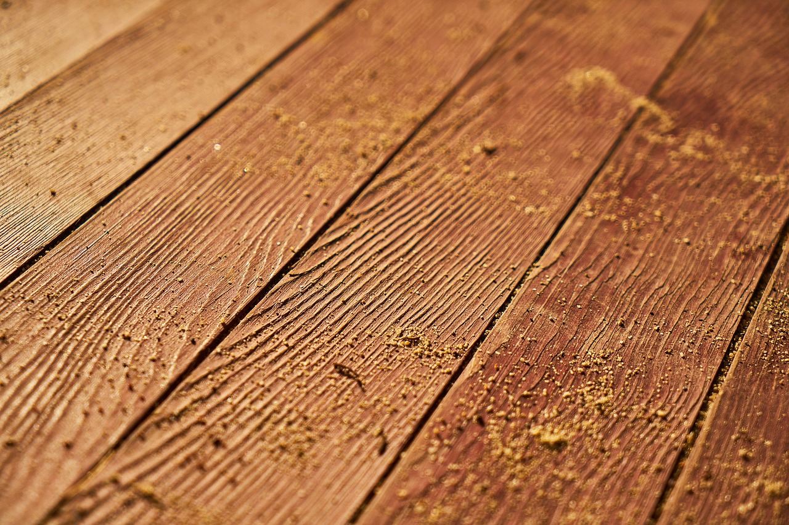
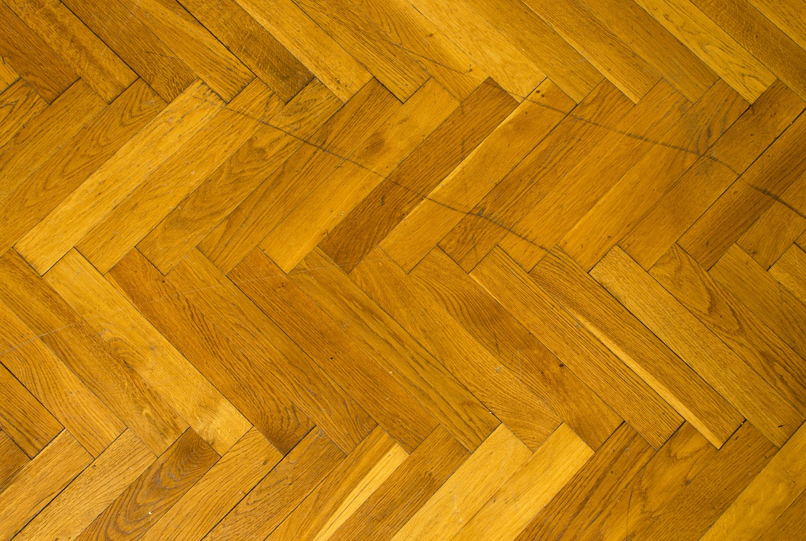

3.1 Diferenciar los productos de acabado y los productos para suelos
A la hora de realizar el mantenimiento de suelos debemos hacer una diferenciación entre los productos que utilizaremos para las tareas propias de limpieza y aquellos que utilizaremos para su cuidado y tratamiento. Cada tipo de suelo, dependiendo del material que lo conforme, tendrá unas especificaciones concretas en cuanto a los productos más adecuados para su limpieza. Un uso de productos y un mantenimiento adecuados prolongarán la vida de los materiales y superficies.
|  | Madera natural: antes de realizar la limpieza deberemos comprobar si se trata de maderas tratadas con productos impermeabilizantes. En caso contrario se recomienda para las limpiezas diarias el uso de aspirador, que recoge los residuos sin arrastrarlos, si se prescinde del aspirador se recomienda hacer uso de la mopa o en último recurso escobas de cerdas suaves. No se recomienda mojar este tipo de suelo por lo que, ante manchas resistentes, podremos usar un paño o mopa ligeramente humedecido. Dado el caso de madera natural impermeabilizada utilizaremos siempre productos específicos para el cuidado de madera diluidos en agua y haciendo uso de una mopa o fregona muy bien escurrida. En manchas más resistentes se recomienda frotar suavemente con un paño humedecido en alcohol, nunca con productos químicos o abrasivos que dañarían la superficie. |
|  | Parquet: (tarima flotante, suelo laminado) en el caso de este tipo de suelos trataremos de seguir las mismas pautas que con las maderas naturales, debemos tener en cuenta que aunque se trata de suelos muy resistentes cualquier daño es mucho más difícil de corregir, por lo tanto se recomienda el uso de mopa, aspirador o escoba de cerdas suaves. A la hora de fregar estos suelos utilizaremos productos específicos o jabón neutro diluido en agua tibia, y una mopa o fregona muy bien escurrida. Si encontramos manchas más resistentes podremos humedecer ligeramente un paño con alcohol, acetona o aguarrás. En caso de dañar el color procederemos a aplicar un barniz o cera reparadora hasta recuperar la tintura homogénea. |
| Mármol: (terrazo y granito) aunque no lo parezca este tipo de suelos son extremadamente delicados, un producto con un pH demasiado alto podría dañar el suelo haciendo que pierda color y brillo. El tratamiento ideal del mármol consiste en realizar las limpiezas diarias con una mopa y de forma periódica pasar una mopa o fregona muy bien escurridas de una dilución de agua y detergente desengrasante común. Es importante no dejar la superficie demasiado húmeda, de ser así pasaremos una mopa absorbente para recoger el exceso ya que el mármol es un material muy poroso y podría absorber la humedad y, con el tiempo, rajarse. | |
 |
Cerámica: para las limpiezas diarias de este tipo de suelos utilizaremos una escoba o un aspirador con cabezales de boquilla que permitan recoger los restos de suciedad atrapados entre las juntas.
Para limpiezas más profundas disponemos de productos específicos para suelos cerámicos, sin embargo también podremos utilizar lejía o producto desengrasante como el lavavajillas. Diluiremos el producto en agua tibia y cubriremos la superficie con ayuda de una fregona o mopa escurrida. Para las juntas deberemos utilizar un cepillo y una mezcla de agua y bicarbonato, también podremos utilizar agua fuerte o un producto específico blanqueador de juntas. Tras realizar la limpieza con producto aclararemos la superficie con agua limpia para evitar que aparezcan marcas. |
 |
Vinilo: los suelos de vinilo, al ser suelos sintéticos resultan mucho más resistentes y fáciles de limpiar, sin embargo, esa misma composición reduce mucho el rango de productos a utilizar. En las limpiezas diarias podremos utilizar escobas, mopa o aspirador, mientras que para las limpiezas en profundidad se recomienda el uso de una mopa o fregona muy bien escurrida de una dilución de agua templada con un limpiador neutro. |